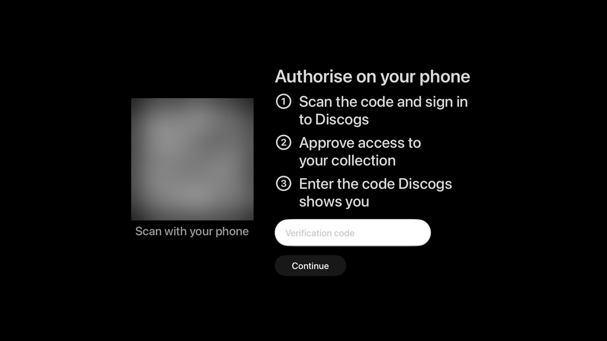

Get started
From install to a built library, in order.
This page covers what you need, how to sign in to Discogs, and what happens on the first launch. Signing in uses your Apple TV and your phone. Each step says which one to use.
You enter your Discogs username and password only on the Discogs page. The app has no password field.
Before you start
-
tvOS 18 or later. To check, go to Settings → General → About on your Apple TV.
-
A free Discogs account. You can create one on the Discogs website.
-
At least one record with the format Vinyl. The app shows only releases whose Discogs format is Vinyl. CDs, cassettes and digital releases are left out.
-
A phone with a camera that reads QR codes. You use it during sign-in.
Getting the app
The app is not on the App Store yet.
If the app is already on your Apple TV, go to Sign in.
Sign in
Signing in takes five steps. Steps 1 and 5 happen on the Apple TV. Steps 2, 3 and 4 happen on your phone.
-
On the Apple TV, choose Sign in with Discogs on the welcome screen.
The TV shows
Connecting to Discogs…, then the next screen.
-
On your phone, open the Camera app and scan the QR code on the TV. Open the link the camera offers. It opens a Discogs page.
While you do this, the TV shows the QR code, the heading Authorise on your phone and an empty
Verification codefield.
-
On your phone, sign in to Discogs if asked, then choose Authorize.
This lets Vinyl for Apple TV read your collection. Discogs then shows a verification code.
-
On your phone, note the verification code. Keep the Discogs page open until step 5.
-
On the Apple TV, select the
Verification codefield, type the code, and choose Continue.The on-screen keyboard opens when you select the field. Continue stays unavailable until the field has text. The TV then shows
Signing you in….
The app is read-only. It reads your collection and never adds, edits or removes records on Discogs.
To disconnect the app later, revoke access in your Discogs application settings.
If the code is not accepted, the TV shows Couldn't sign in and the reason. Choose Try again to get a new QR code, then repeat steps 2 to 5.
Build your library
After sign-in, the TV shows Building your library with a count, such as Fetching 247/812 albums…. The count includes every release in your collection, not only vinyl records. Until the count starts, the TV shows Fetching your collection….
The build runs the first time you sign in. It runs again after you erase the library, or when you sign in with a different Discogs account.
When the count finishes, the gallery opens. Covers are looked up in the background after that, so some covers change while you browse. Cover art explains the order.
If the build fails, the TV shows Couldn't build your library and the reason. Choose Retry to build again. Choose Continue anyway to open the gallery without a library. You can then choose Refresh collection in the Settings menu to build it.
If you choose Continue anyway, the build also starts again the next time you open the app.
The app reads your collection 100 records at a time, so a large collection takes longer. If Discogs asks the app to slow down, the build pauses for 5, 15 and then 30 seconds before it reports an error.
Sign in again later
After you choose Sign out (keep library), signing in with the same Discogs account opens the gallery at once. The app then adds any records you have added since.
If Discogs stops accepting the sign-in, the app returns to the welcome screen with a notice that says so.
If you delete the app and install it again, the first launch removes the Discogs sign-in that the earlier install left behind. You then sign in again.
Use another Discogs account
To use a different Discogs account, sign out from the Settings menu first. Then sign in with the other account.
The app builds a library for the new account. A library kept from the earlier account is erased when that build starts.
What stays on your Apple TV
Your library is stored on this Apple TV. Your Discogs sign-in is kept in the Keychain on this device only, and it is not synced through iCloud Keychain.
The privacy policy lists what the app stores and which services it connects to.
Next steps
The gallery opens in CoverFlow, sorted by Recently added, so your most recently added record is in the centre.
If the gallery says No vinyl yet, check that your records have the format Vinyl. Then see Support.
When the gallery opens, you are ready. How to use explains the Siri Remote, the gallery, the record screen, the halo and the Settings menu.